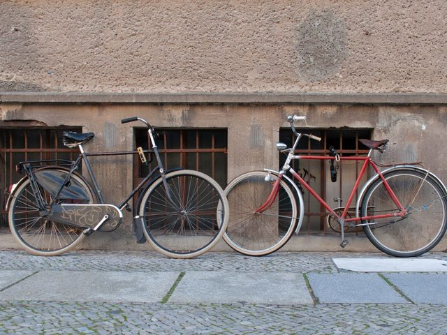
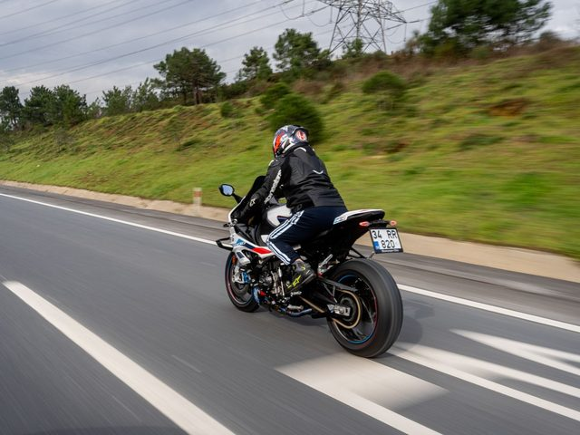
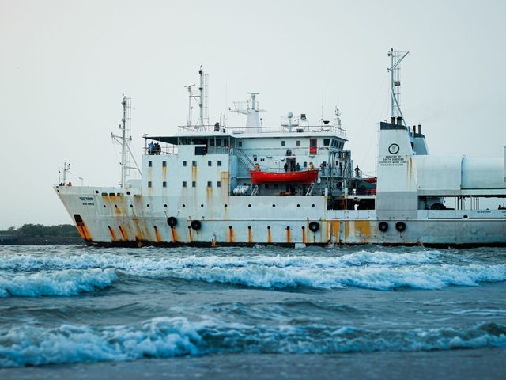
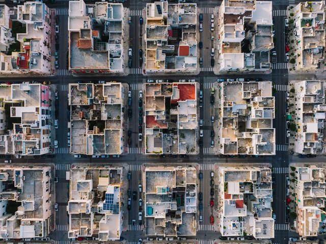
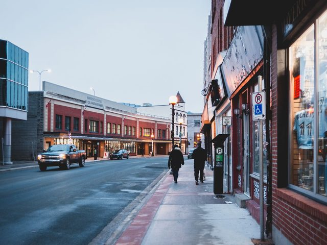
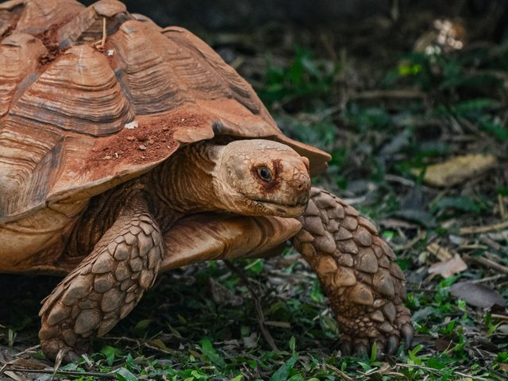

UNIT 18 · VOCABULARY
交通
Transportation
27 個單字聽・唸・用
本單元單字一覽
交通工具、路上的地點、和交通有關的動詞與形容詞，共 27 個字。注意 by bus、on foot 的說法，以及 drive、fly、ride 的過去式。
airplanebicycleboatbuscarmotorcyclescootershiptaxitraintruckairportstationblockbridgesidewalktrafficarrivecrossdriveflylandrideturnfastquickslow
每個字都有 🔊，先聽發音、跟著唸，再看例句。
單字 1–4

airplane
飛機n.
The airplane is taking off.
飛機正在起飛。
飛機正在起飛。

bicycle
腳踏車n.
I ride my bicycle to the park.
我騎腳踏車去公園。
我騎腳踏車去公園。

boat
小船n.
We took a boat to the small island.
我們搭船去那座小島。
我們搭船去那座小島。

bus
公車n.
I take the bus to school every day.
我每天搭公車上學。
我每天搭公車上學。
單字 5–8

car
汽車n.
Dad washes his car on Sundays.
爸爸星期天洗他的車。
爸爸星期天洗他的車。

motorcycle
摩托車n.
My uncle rides a motorcycle to work.
我叔叔騎摩托車上班。
我叔叔騎摩托車上班。

scooter
輕型機車；滑板車n.
Many people in Taiwan ride scooters.
台灣有很多人騎機車。
台灣有很多人騎機車。

ship
船；大船n.
The big ship sailed across the ocean.
那艘大船航行過了海洋。
那艘大船航行過了海洋。
單字 9–12

taxi
計程車n.
We took a taxi to the hotel.
我們搭計程車去飯店。
我們搭計程車去飯店。

train
火車；列車n.
The train to Kaohsiung leaves at nine.
開往高雄的火車九點出發。
開往高雄的火車九點出發。
truck
卡車；貨車n.
A big truck is carrying sand.
一輛大卡車正在載沙子。
一輛大卡車正在載沙子。

airport
機場n.
We got to the airport two hours early.
我們提早兩個小時到機場。
我們提早兩個小時到機場。
單字 13–16

station
車站；局；台n.
Let's meet at the train station.
我們在火車站見面吧。
我們在火車站見面吧。

block
街區；積木；大塊n.
The bookstore is two blocks away.
書店在兩個路口外。
書店在兩個路口外。

bridge
橋n.
We walked across the bridge.
我們走過了那座橋。
我們走過了那座橋。

sidewalk
人行道n.
Please walk on the sidewalk.
請走在人行道上。
請走在人行道上。
單字 17–20

traffic
交通；車流n.
There is a lot of traffic in the morning.
早上車很多。
早上車很多。

arrive
到達；抵達v.
Our train arrived on time.
我們的火車準時到達。
我們的火車準時到達。

cross
越過；穿過v.
Hold my hand when we cross the road.
我們過馬路時牽著我的手。
我們過馬路時牽著我的手。

drive
開車；駕駛v.
My mom drives me to school.
我媽媽開車送我上學。
我媽媽開車送我上學。
單字 21–24

fly
飛；搭飛機；蒼蠅v./n.
We will fly to Japan next week.
我們下週要搭飛機去日本。
我們下週要搭飛機去日本。

land
降落；上岸；陸地v./n.
The plane will land in ten minutes.
飛機再十分鐘就要降落了。
飛機再十分鐘就要降落了。

ride
騎；搭乘v.
My little sister is learning to ride a bike.
我妹妹正在學騎腳踏車。
我妹妹正在學騎腳踏車。

turn
轉彎；輪流v./n.
Turn right at the traffic light.
在紅綠燈右轉。
在紅綠燈右轉。
單字 25–27

fast
快的；快地adj./adv.
Cheetahs can run very fast.
獵豹可以跑得非常快。
獵豹可以跑得非常快。

quick
快的；迅速的adj.
I had a quick breakfast and ran to school.
我很快吃完早餐就跑去上學。
我很快吃完早餐就跑去上學。

slow
慢的adj.
Turtles are slow animals.
烏龜是動作很慢的動物。
烏龜是動作很慢的動物。
怎麼去？交通方式的說法
| 說法 | 中文 | 例句 |
|---|---|---|
| by bus / by train / by car | 搭公車／火車／汽車 | I go to school by bus. |
| by plane / by taxi / by bike | 搭飛機／計程車／騎腳踏車 | We went to Japan by plane. |
| on foot | 走路 | My grandpa goes to the park on foot. |
| take a bus / take a taxi | 搭公車／搭計程車 | Let's take a taxi. |
| ride a bike / a scooter / a horse | 騎腳踏車／機車／馬 | Can you ride a horse? |
| drive a car | 開車 | My mom drives a car to work. |
by 後面直接接交通工具，不加 a、the：by bus（不是 by a bus）。走路是 on foot，不是 by foot。
交通動詞的三態
| 原形 | 過去式 | 過去分詞 |
|---|---|---|
| drive 開車 | drove | driven |
| fly 飛 | flew | flown |
| ride 騎 | rode | ridden |
| arrive 到達 | arrived | arrived |
| cross 越過 | crossed | crossed |
| land 降落 | landed | landed |
現在分詞：drive → driving、ride → riding（去 e 加 -ing）；fly → flying。
fast、quick、slow 怎麼用
| 單字 | 意思 | 例句 |
|---|---|---|
| fast | 速度快（形容詞、副詞同形） | He is a fast runner. He runs fast. |
| quick → quickly | 動作迅速 | Come here quickly! |
| slow → slowly | 慢 | Please speak slowly. |
| soon | 時間上很快、不久 | See you soon. |
fast 當副詞不加 -ly，沒有 fastly 這個字。
快問快答：中文 → 英文
1飛機airplane
2腳踏車bicycle
3小船boat
4公車bus
5汽車car
6摩托車motorcycle
7輕型機車；滑板車scooter
8船；大船ship
快問快答：英文 → 中文
1taxi計程車
2train火車；列車
3truck卡車；貨車
4airport機場
5station車站；局；台
6block街區；積木；大塊
7bridge橋
8sidewalk人行道
學完了！接下來
複習方法
review
- 回到「📗 單字卡」，按「遮中文」自己考自己
- 再按「遮英文」，看中文說出英文
- 每個例句跟著 🔊 唸一次
準備好了
- 按右上角「📝 前往測驗」
- 測驗錯的題目要訂正到全對
- 訂正完成補送 1 點